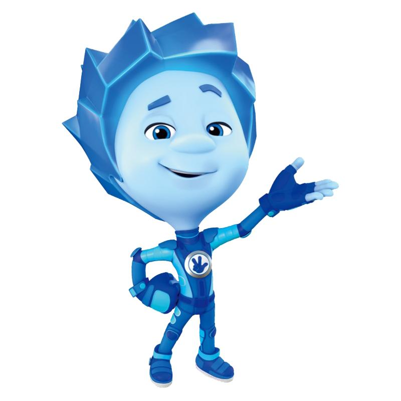
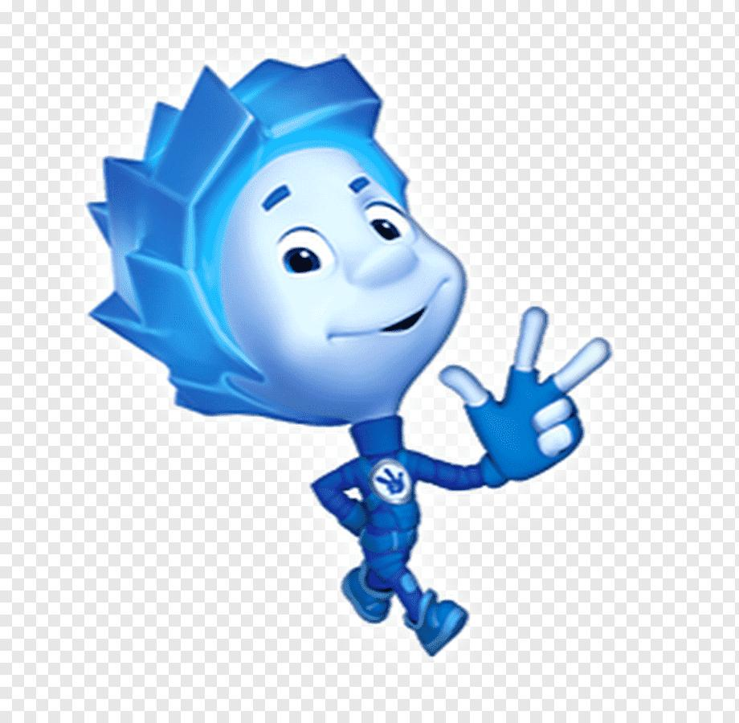
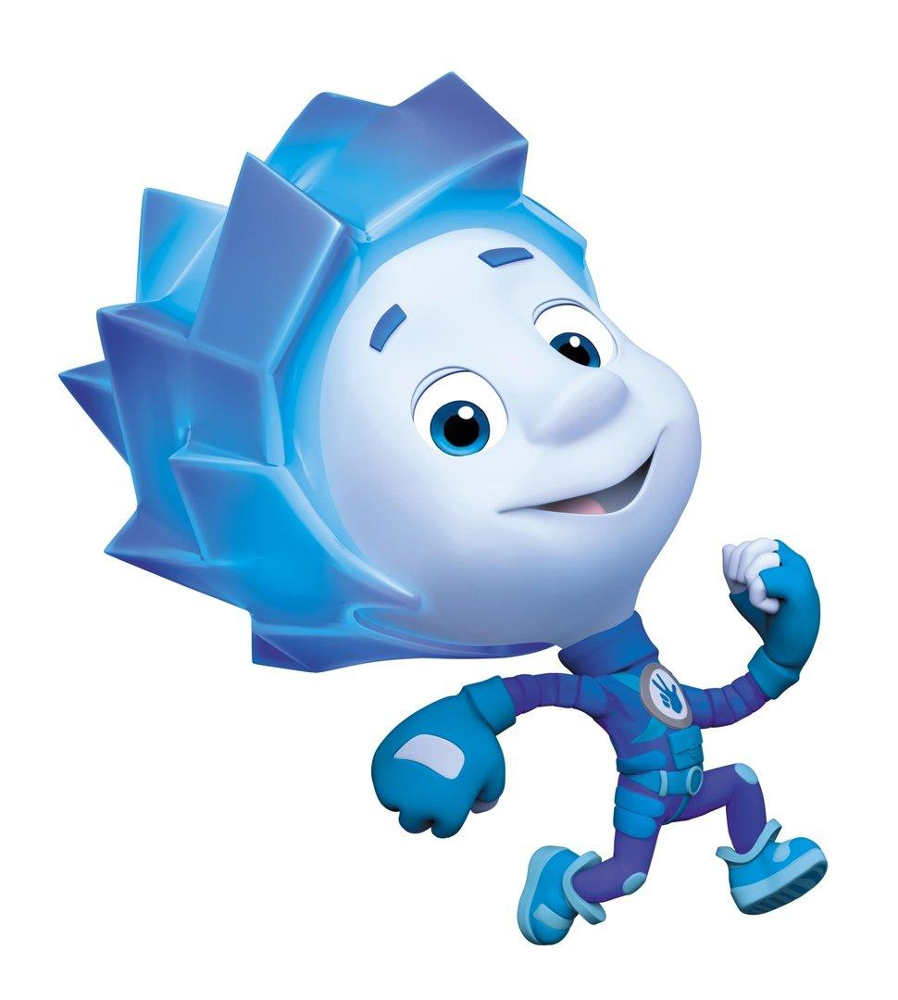
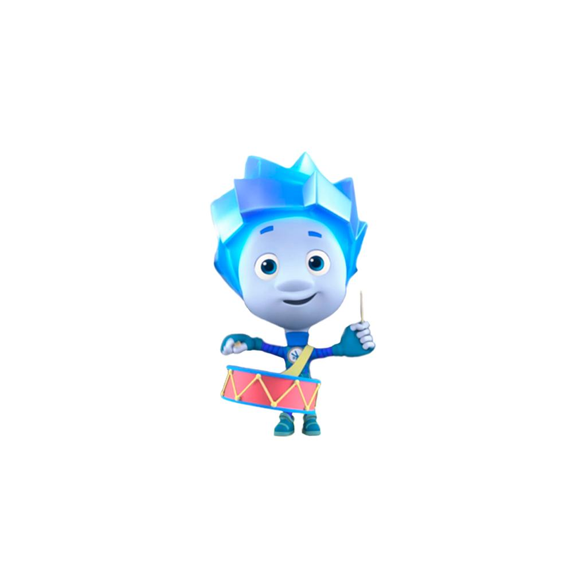

Главная
Знакомьтесь, Нолик!
Нолик — один из главных персонажей российского мультсериала «Фиксики». Он младший ребёнок в семье фиксиков и младший брат Симки.
Нолик — маленький голубой фиксик, который живёт внутри различных приборов и помогает устранять неисправности. Вместе с друзьями он исследует окружающий мир, узнаёт, как устроены привычные вещи, и постоянно попадает в интересные приключения.
Несмотря на свой небольшой рост, Нолик обладает большой энергией, любознательностью и желанием узнавать новое.

Внешность
Нолик — маленький фиксик голубого цвета. У него светло-голубая кожа, яркие голубые глаза и растрёпанные волосы такого же оттенка.
Обычно он носит синий комбинезон со знаком фиксиков на груди, голубые перчатки без пальцев и кроссовки.
Его характерная особенность — способность превращаться в винтик, благодаря чему он может маскироваться среди деталей различных устройств.
Характер
Нолик — весёлый, активный, общительный и любознательный персонаж. Он любит приключения, игры и эксперименты.
Иногда Нолик бывает непоседливым, торопится с выводами и не всегда думает о последствиях своих поступков. Из-за этого он периодически оказывается в затруднительных ситуациях.
Однако он умеет дружить, доверять окружающим и признавать важность помощи близких. Нолик постоянно учится чему-то новому и старается становиться самостоятельнее.

Навыки и способности
- Ремонт техники — умеет помогать в устранении неисправностей различных приборов.
- Техническая смекалка — интересуется устройством механизмов и электронных устройств.
- Маскировка — способен превращаться в винтик.
- Ловкость — быстро передвигается и преодолевает препятствия.
- Любознательность — стремится узнавать новое и исследовать окружающий мир.
- Решение проблем — старается находить выход из сложных ситуаций.

Друзья и семья
Симка — старшая сестра Нолика. Она более опытная и часто помогает ему разбираться в сложных ситуациях.
Папус — отец Нолика, опытный и умелый фиксик.
Мася — мама Нолика, заботливая и внимательная.
Дедус — дедушка Нолика, обладающий большим опытом и знаниями.
ДимДимыч — один из лучших друзей Нолика. Вместе они часто исследуют различные устройства и попадают в приключения.
Интересные факты
- Нолик — младший брат Симки.
- Его характерный цвет — голубой.
- День рождения персонажа — 21 февраля.
- Нолик способен превращаться в винтик.
- Он очень любит приключения и новые открытия.
- Нолик иногда нарушает правила, но постепенно учится на собственных ошибках.
Видео и источники
- Официальный сайт «Фиксиков»
- Статья о «Фиксиках» в Википедии
- Нолик — описание персонажа
- Официальный канал «Фиксики» на YouTube
